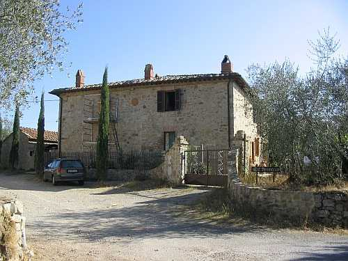

Il podere Paradiso è stato da sempre, cioè dai tempi di Roma antica che vi ha lasciato alcune vestigia, strettamente unito a Petroio di cui ne era parte. L’ordine benedettino possessore dei beni di Petroio nell’XI secolo usava attribuire ad alcuni poderi, situati in luoghi ameni o di collina, il nome di "Paradiso", ma questo attributo non risulta mai negli antichi documenti e solo con l’avvento delle monache di S. Lorenzo appare per la prima volta nell’Ottocento e quindi il battesimo di "Paradiso" si può assegnare a queste religiose, probabilmente per distinguerlo dagli altri poderi di Petroio. Oppure tutto nasce da un grosso equivoco causato un po’ dalla ignoranza dei tempi quando nei contratti di compravendita ai primi dell’Ottocento viene definito erroneamente come ex possesso delle monache del Paradiso.
Tra le proprietà succedutesi dal Cinquecento abbiamo documentati i Cosci fino al 1581, poi i Granai dal 1592 e per i primi decenni del Seicento. Dovrebbe poi esser passato al Credi, che possiede anche Petroio, il quale lo cede ai Tantucci e intorno al 1640 acquista il podere il pievano di San Fedele della famiglia Squarcialupi, ancora titolare nel 1672. Incerta si fa ora la proprietà, attribuita al Lottorenghi nel 1685 e di nuovo allo Squarcialupi nel 1705. Infine, nel 1707 alle dette monache di S. Lorenzo di Siena. Sarà un lungo possesso il loro che finirà col Settecento, contemporaneamente alla chiusura del soppresso convento. Il podere venne così acquistato nel 1788 dal Pier Antonio Comini. Domenico Comini eredita e il Paradiso viene venduto il 7 febbraio 1812 a Paolo Ploner e ai fratelli Francesco e Giuseppe Rossi. Il Ploner poi passa la sua parte ai Rossi nel 1818. L’anno successivo il nobile Giuseppe Fondi acquista il Paradiso che a sua volta rivende il 31 dicembre 1823 a Ferdinando Manetti il nuovo padrone della tenuta di Petroio e da quel momento ne seguirà le sorti.
Posto di fronte a Casagrande, a un centinaio di metri da Petroio il podere Paradiso e situato lungo la strada di Vagliagli, sopraelevato rispetto al piano stradale. Il catasto del 1825 presenta una casa colonica di 840 bq. pari a mq. 285. Successivamente si aggiungono la capanna a Ovest lungo la strada e i castri dalla parte di Petroio. La famiglia che vi ha abitato fino al 1957, i Carli, coltivavano un medio podere di sei/sette ettari, che era stato diminuito nel 1922 quando parte delle sue terre vennero aggregate al nuovo podere di Poggiagrilli. I suoi campi si distribuivano in modo irregolare e spezzettato sul territorio, sia al di qua che al di là della strada comunale, con un pezzo lungo il Bozzone, un altro alla strada della Catena, poi quel triangolo tra il Paradiso, Petroio e il Madonnino che continuava di fronte al cimitero sempre al di sopra della strada. Il pezzo più grande era verso Pietralta a sinistra della strada e guardava a Sornano. La modesta produzione del grano, considerando il terreno più adatto ad olivi e viti, si conteneva in 50/55 ql. l’anno, con migliori risultati per l’olio e il vino. Nella stalla un paio di bovi e un paio di vitelli
"quando era parecchio". Pecore,
"tenute fino in fondo", da sei a otto per il formaggio per casa, e la lana, sempre per casa, lavorata col il telaio che usava la nonna Argia. Seminavano lino e tennero bachi da seta fino al 1936/37. Avevano il forno e per l’acqua potabile al pozzo di Petroio, altrimenti al borro.
Sede da sempre di un solo contadino, mai si registra la presenza di un pigionale, vissero al Paradiso numerose famiglie e tra le più antiche troviamo Oliviero Bartoli nel 1592 e Maso Pedani nel 1611, Ippolito Michi nel 1672 e di seguito i Semplici, i Conti, il Marchetti, e sul finire dell’Ottocento i Carli che arrivano dalle Gallozzole, degli stessi Andreucci padroni di Petroio. Con i Carli fino al 1957 e poi i Pagliantini si chiude la storia del Paradiso.
La facciata nord del podere Paradiso con l'antico "moro"
I resti dell'arco romano del podere Paradiso
Capitolo successivo Passeggeri
Inizio pagina
Vai all'Indice dei Capitoli